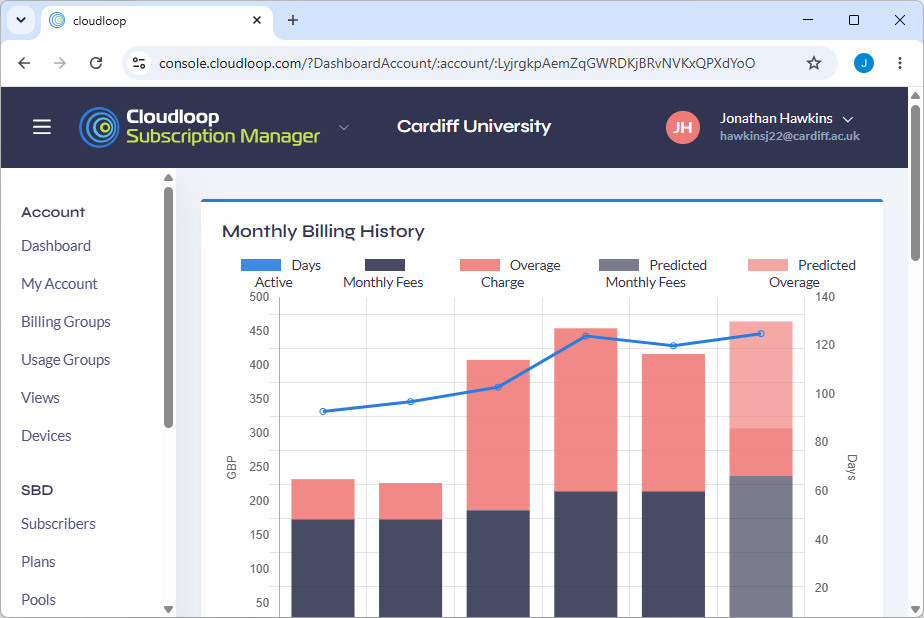
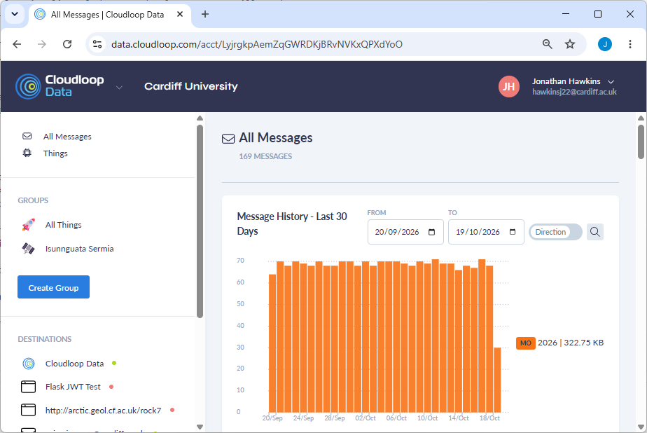
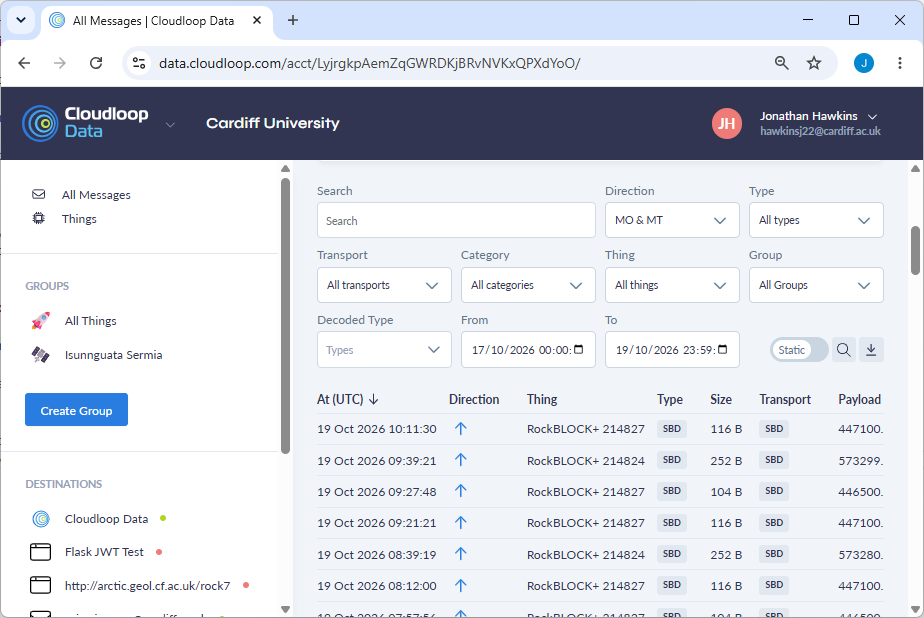
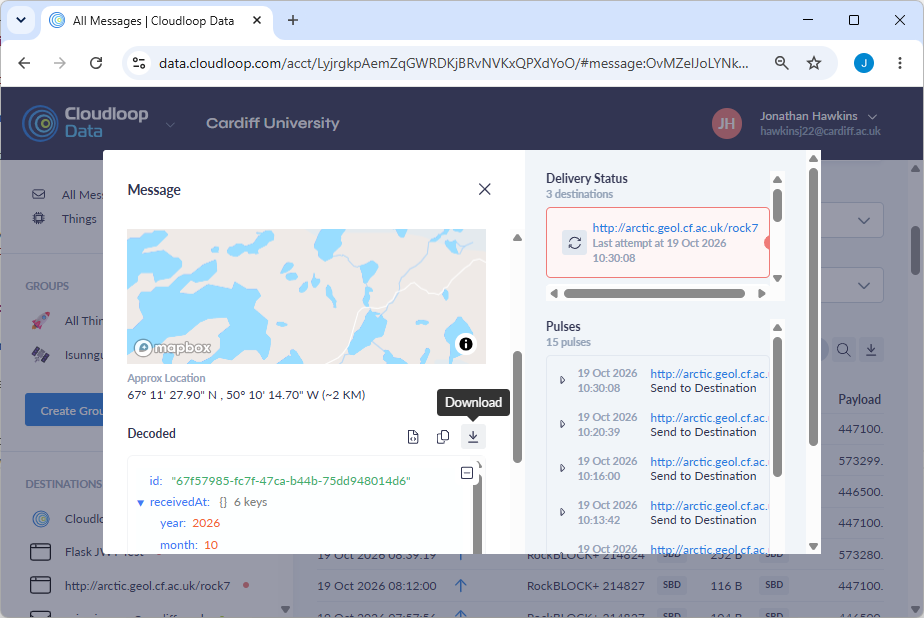
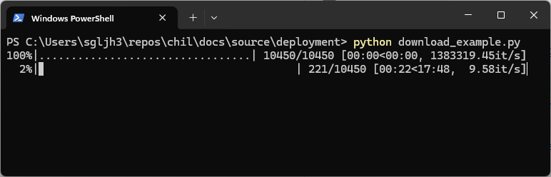
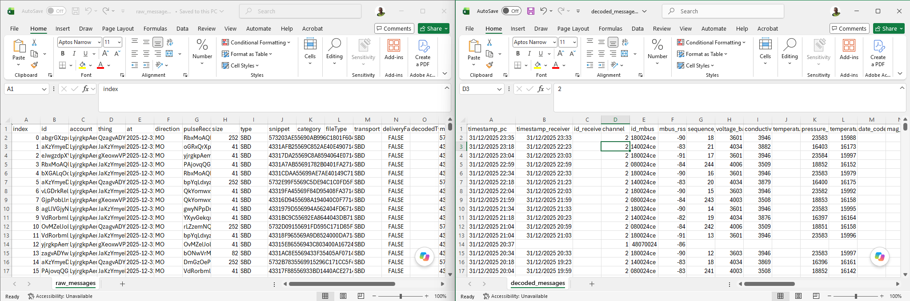

Satellite data (Cloudloop)#
Note
To use the Iridium functionality of the CHIL dataloggers, you will need an active subscription.
Contact GroundControl’s customer services by phone using +44 (0) 1452 751940 or email via hello@groundcontrol.com.
GroundControl operate a web interface named Cloudloop to manage and provide access to data transmitted using the RockBLOCK+ Iridium modem in CHIL dataloggers.
Cloudloop Console#
To manage your subscription and devices, navigate to console.cloudloop.com and enter the email address and password you have been provided by GroundControl.
Once you have logged in, you’ll be presented with the homepage (Figure 87).

Fig. 87 Cloudloop Subscription Manager homepage.#
Cloudloop Data#
To view message history and data from your dataloggers, navigate to data.cloudloop.com and enter the email address and password you have been provided by GroundControl.
Tip
It is useful to have a Cloudloop account accessible to someone with an internet connection that you can contact from the field. This allows you to check that the Iridium link is working correctly as they will be able to see new messages arriving.

Fig. 88 Cloudloop Data homepage.#
On the left hand side, various menu options are available to view all messages associated with your account or to organise messages by user-defined “groups”. This option is useful when managing multiple deployments.
In either the grouped or All Messages view, you are able to filter the incoming messages by modem ID, message type (i.e. SBD), group name and date.

Fig. 89 SBD message filtering interface on Cloudloop Data.#
There is also the option to export messages, their metadata and decoded contents as a comma-separated values (.csv) file (‘download’ icon in Figure 89).
Warning
Cloudloop Data truncates message content downloaded in this view and messages over approximately 100 bytes will not be downloaded completely.
To download messages in their entirety, see the Downloading messages using Python section below.
Selecting an individual message will show the metadata associated with that packet, such as the time it was received by GroundControl, the approximate location it was transmitted from and the size in bytes. In this view, the message is encoded as a base64 string.

Fig. 90 Mesasge metadata and decoded contents view.#
It is possible to download the contents of an individual message from this view as a .false file which contains the original message encoded in a binary format.
Tip
You can use Python to quickly decode the contents of a message from the Message view on Cloudloop Data, copy the base64 encoded string and replace it in the code snippet below.
import cryodecoder, base64
# Convert the message to a hex string
message_as_hex = base64.b64decode("RHEAMVNJVM3s...").hex()
# Parse into CHIL message blocks
blocks = cryodecoder.parse_hex(message_as_hex)
Downloading messages using Python#
To get around the limitations of exporting data directly from the Cloudloop Data messages interface (see here), the cryodecoder library provides a method to download and parse messages from Cloudloop. Using cryodecoder.download_and_parse_cloudloop saves the raw messages and decoded contents into separate .csv files for quick analysis.
Important
You will need a Cloudloop API key in order to use this method which can be obtained by emailing Cloudloop (hello@groundcontrol.com).
The API key can be provided in plain text as an api_key=... argument to the download method, or it can be saved in an environment variable called CLOUDLOOP_API if you wish to use version control on your source code without saving the API publicly.
The code snippet below shows example use of the download_and_parse_cloudloop method with the optional start_date and end_date variables which can be used to limit the number of messages downloaded to a specific time window.
# download_example.py
import cryodecoder
from datetime import datetime
# Download data from the account associated with the API key between
# Jan 1st 2025 and Jan 1st 2026
cryodecoder.download_and_parse_cloudloop(
raw_path="/path/to/raw_messages.csv",
data_path="/path/to/decoded_messages.csv",
start_date=datetime(2025,1,1),
end_date=datetime(2026,1,1),
api_key="..."
)
If you have saved the API key in an envronment variable, you can omit the api_key argument from the example above. When the program executes, it will show a progress window as the messages download. The Cloudloop API is rate limited, so for a large number of downloads this process might take a while.

Fig. 91 Downloading packets from Cloudloop using the cryodecoder Python library.#
Figure 92 below shows example contents of the raw and decoded .csv files generated when downloading data from Cloudloop using the cryodecoder utility function.

Fig. 92 Examples of raw_messages.csv and decoded_messages.csv.#